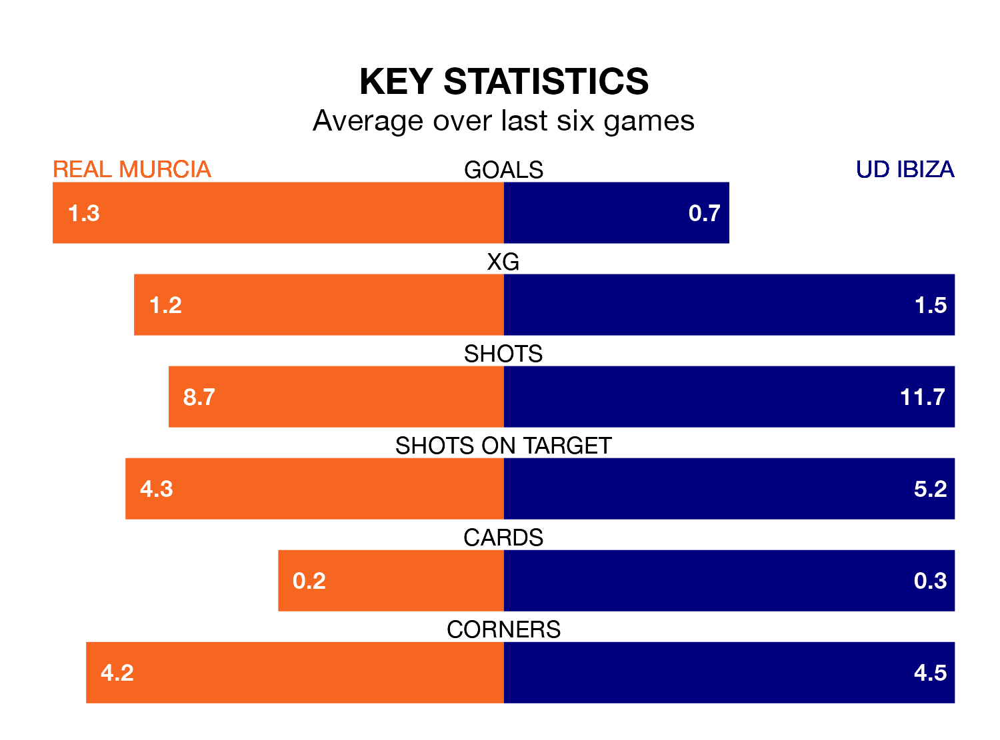

UD Ibiza travel to the Estadio Nueva Condomina looking to secure a first win in six Primera Division RFEF Group 2 games against Real Murcia on Sunday.
Ibiza have lost two and drawn three matches since they last earned three points – against Granada B on February 4.
They face a Murcia side who have won just two and lost three over that time.
With 46 goals in 27 games so far this season, Ibiza are the league's third-highest scorers with 1.7 goals per game. And they are conceding fewer than average, letting in 21 goals at a rate of 0.8 per game.
Murcia, meanwhile, are below average scorers, with 1.0 goal per game, compared to a league average of 1.1. They have conceded 1.1 goals per game.
The visitors are second in the table after 27 games, of which they have won 16 and drawn eight, earning 56 points.
The home team are eight places behind Ibiza in 10th, with 10 wins and seven draws putting them on 37 points.
With Manuel García Humanes between the sticks, Murcia can rely on one of the league's safest pair of hands. He has kept 10 clean sheets in his 19 appearances this season, and only one other 'keeper – Recreativo de Huelva's Rubén Ramos González – has been able to prevent the opposition scoring on more occasions in Primera Division RFEF Group 2.
In Ibiza's net, Patrick Gilmar Sequeira Mejías has nine clean sheets in 20 games.
Murcia's last match was on Sunday, a 2-0 loss against Linares Deportivo.
Ibiza drew 2-2 with Algeciras CF last time out, also on March 10, with Cedric Omoigui and Fausto Antonio Tienza Nuñez on the scoresheet.
Updated: 15:10 (UTC), 15/03/24